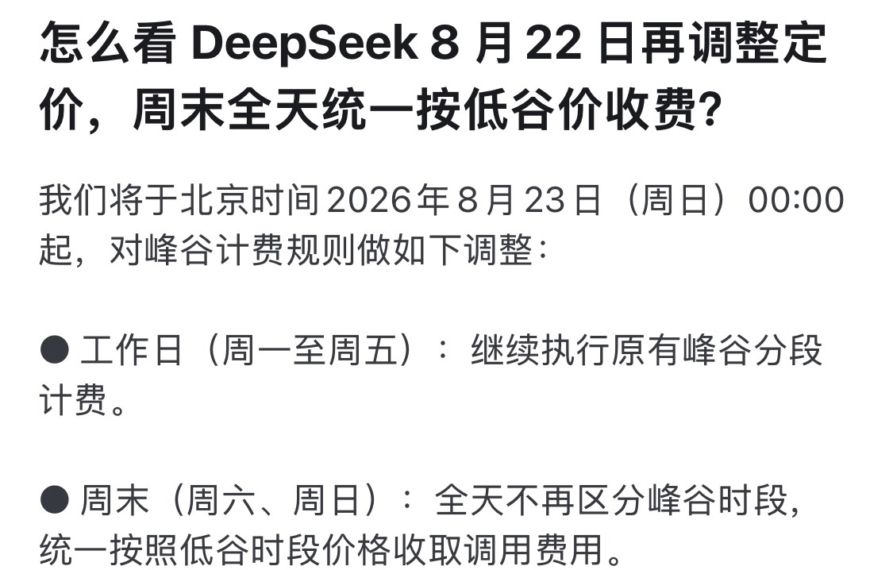

凌嘉欣
@LingJiaXin233
回望历史，我们惊人地发现，
deepseek峰谷定价这件小事，推动了灵活工作时间的概念，解决了限号都没能解决的各种出行交通拥堵问题。
就如同峰谷电价，促使一部分工厂特别是高耗能企业调整工作时间或生产节奏。
嗯？等等，这两个峰谷有点像，我再看看。
部分省份有“周末全天按谷段/平段”的特殊政策？它们在不在？不过即便价格相同，社会总用电量，工作日>周末，但差距一般不超10%-15%。我要是电力部门也得支持！
这么搞，整体运行稳定性高很多啊。
